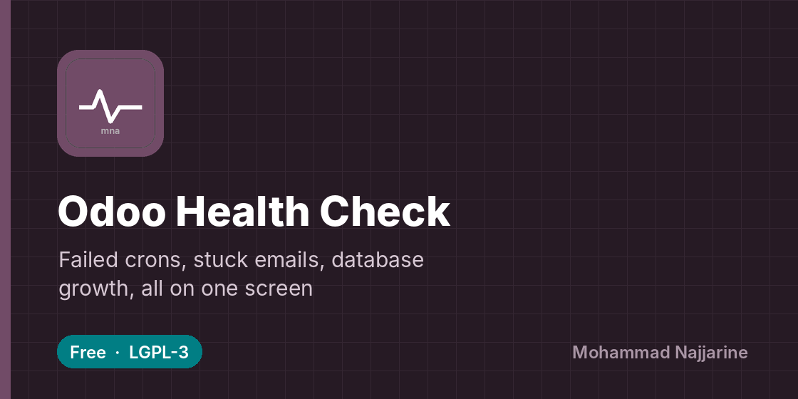
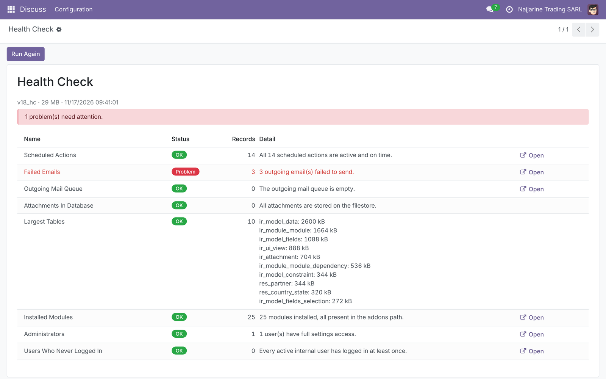

Scheduled actions fail silently. Emails sit in the queue for weeks. The database doubles in size and nobody notices until the server fills up. None of this is visible anywhere in standard Odoo without digging through Technical menus one at a time. This module puts it on one screen, read-only, on demand.
Finds actions that are switched off or past their next run time, which usually means the cron worker has stopped.
Failed sends and anything stuck in the outgoing queue for more than a day.
Total size, the ten largest tables, and attachments stored in the database instead of on disk.
Modules still marked installed whose folder has gone missing from the addons path.
How many people hold full settings access, and active users who have never once logged in.
Every finding has a button that opens the exact records behind it, so you can go and fix them.

Everything is read-only and nothing leaves your database: there is no phoning home, no external service and no data collection. Only users with settings access can run it. If one check cannot run on your version it reports itself and the rest still complete.
Built and maintained by Mohammad Najjarine, Odoo consultant. Questions, bugs or a custom need: github.com/najjarinelb